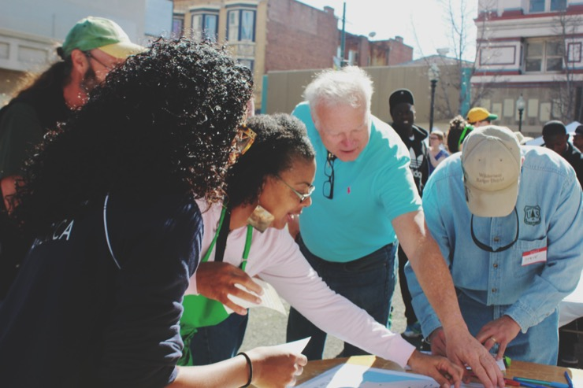

Code Across

CodeAcross was a national event held in 60 communities around the world. It is traditionally a civic hacking day, but in Vallejo we decided to make it all about the residents and their hopes and thoughts on how to improve the city. It was a way to connect the amazingly diverse communities in Vallejo in one spot, the Farmer’s Market, and share laughs, conversations, and ideas about how Code for America might be able to work with citizens to improve public safety through technology.
What We Did.
We set up in the empty lot of the Bank Building on 332 Georgia Street, right in the peak of the Farmer’s Market from 11am to 1pm. Attendees were greeted with balloons and Team Vallejo fellows Nikki, Andrew, and Jazmyn. We set up 5 tables for people to congregate around, express their perspectives in the activity and then discuss with those around them. The final table was rounded off with pizza as a thanks for participation and members of the local band New Hot Ice playing some fun blues and classic R&B tunes.
Where Do You Stand?
The first activity asked participants to place a sticker indicating where they stand in a series of statements about Vallejo. At one end of the spectrum was “Agree”. At the other end of the spectrum was “Disagree”. The final result was a beautiful spectogram of all participants views on each statement, showing that things are not always black and white.
I Like..I Wish..What If..
We asked participants to take a sticky note and write on it what they like about Vallejo, what they wish were different in Vallejo, imagine a what if scenario in Vallejo, and finally to write a headline they’d like to see in the newspaper this time, next year. Scroll through each section below to read everyone’s answers.
What If...?
Attendees thought of a “what if” scenario that might take place in Vallejo.

I Like...
Attendees wrote down what they like about Vallejo.


I Wish...
Attendees wrote down what they wish was different in Vallejo.
Next Year's News Headline
Attendees wrote down a hypothetical news headline for Vallejo, next year.


Where's Your Vallejo?
During our month of residency we spoke to many people about their perspectives and experiences in Vallejo. We realized that everyone’s experience is different, but one common theme remained: they’re tired of hearing people talk so negatively about the place they call home. We decided to get CodeAcross participants to tell us what they loved about Vallejo by placing a sticker on the map at their most special place in the city and write down why. Click on the markers to see what they said.
How Might We...
How might we improve Vallejo through technology? This was the final exercise at CodeAcross where participants could get creative and tell us their ideas about what we might be able to do this year with technology.